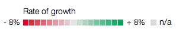

The map visualizes GDP growth rates for the world from 1961 to 2011. Positive growth is represented as increasingly dark shades of green and negative growth as shades of red. The timeline makes it possible to view changes in growth from one year to the next or more casually. Significant historical events are clearly visible in the changes: the Mideast oil boom of the 70s, the Iranian revolution, and recession in the 80s. The disollution of the Soviet Union produces a marked effect on the graph. More easily missed but still visible are the Asian currency crisis of 1998 and the South American crisis of 1999, as well as the recent, persistent strength of China and India. And of course, the impact of the 2008 financial crisis is indicated powerfully when global GDP growth is negative the next year for the first time since at least 1961.
Data sources are cited below.
Over the last few years as I have gravitated towards web development and away from desktop application development I have been continually impressed by the quality of design on the web and the capabilities of JavaScript as a programming language. It seems like the best minds in the industry are focusing their creative efforts into making amazing, beautiful artifacts for our web browsers and that web browsers have just about caught up to their efforts. The quality and quantity of innovation is astonishing, both in the production of reusable code and in the use of web standards.
I want to be a part of this. How could I not? To participate in web development's Renaissance as its Renaissance man, that elusive combination of designer and developer whose craft is equal parts code and art, is a worthy pursuit. In just the last month I was fortunate to come across a JavaScript library called D3 that combines design and development in one of the most elegant APIs I have ever seen. If ever there were a library to aid me in that endeavor, this was it.
D3 is a data visualization library created by Mike Bostock, who must be a genius. If you followed the New York Times 2012 election coverage at all, you probably saw his handiwork, for example in the Paths to the White House interactive graphic. I required the library to chart light values over time for an animal tracking software project I am working on, but it turns out that folks are using D3 to create all manner of breathtaking graphics. Once I had satisfied the library's rather steep learning curve, I set to looking for a more complex visualization to try my hands on. I settled on worldwide GDP growth by country.
D3 creates data-driven visualizations. It works by binding data to a selection of elements on a web page, including SVG tags, and then associating transitions with that data. Given the data, bindings, and associations, D3 automatically creates and modifies the content of a web page. You provide the data and declare the visualization, D3 does the rest.
I required two datasets. The first came from sample code and provided polygonal mappings of nations on a Mercator projection. This would permit me to draw the map. The second was actual GDP data. The advantage of working with economic data is that it is plentiful and accessible. The World Bank provides a large set of economic data for aspiring visualizers, including GDP. For this graphic I needed to combine the GDP data with the polygonal. For each polygon, I wanted to fill it with a color that indicated the rate of growth. In D3 this meant that I would bind each polygon to an SVG path element and then look up its fill color by mapping from the growth rate via a color scale.
The common element relating the two datasets was the country code, a standardized two or three character representation. In my case, the polygonal dataset used a two character representation and the World Bank data three characters. I needed a way to convert from one to the other. Wikipedia provides the ISO reference sheet that includes both, so I wrote a small Ruby script to extract the information from their webpage and push it into a CSV file.
The first step in the visualization itself is preparing the map projection and setting up the function that will create the SVG path from the polygon. D3 makes this simple if you are providing GeoJSON data, which is the format of the polygonal data.
var projection = d3.geo.mercator() .translate([480, 300]) .scale(960); var path = d3.geo.path() .projection(projection);
For the colors I must set up a scale that maps a GDP number into a color space. Again D3 makes this a snap, even allowing me to specify a polylinear scale for diverging values. I can then pass a number to the function and get back an interpolated color.
var color = d3.scale.linear() .domain([-8, 0, 8]) .range(["#de1f2e", "#e4e4e4", "#0ca454"]);
Once I have these functions set up it is astonishingly straightforward to draw the map with the right color values. To be fair there is a bit of additional setup involved that I am skimming over. I need to load the data from the three sources. I must compose a function to convert two character codes to three character codes and another to look up the GDP data for a given year. But this is simple enough. The really amazing work happens in just a dozen lines of code that use the D3 library.
var gdp = g.selectAll('.gdp')
.data(data.countries.features)
.enter().append("path")
.attr('id', function(d) { return d.id; })
.attr('class','gdp')
.attr('fill', function(d) { return growthColor(d,year); })
.attr('stroke', '##fff')
.attr("d",path)
.on("click", mapclick)
.on("dblclick", mapdblclick)
.append("title")
.text(function(d) { return growthLabel(d,year); });
That's it. No, seriously. That bit of code right there draws the entire world map and fills each country with a color that corresponds to its rate of growth for a given year. Easy, right? It took me a few weeks to really understand what is going on there. Let's pull it apart.
The code begins with a D3 selection. This prepares a data binding by specifying which page elements the binding should target. It uses a CSS selector to target elements of class gdp. At this point there are none, so D3 returns an empty selection that we can operate on. The next step binds the data, an array of polygon "features". At this point D3 now knows that every gdp page element is related to some country's polygonal data.
The enter method is a kind of iterator that loops through every object in our polygonal features array. Append then creates an SVG path element for each polygon, which we can set up any way we like. This includes setting attributes and attaching event handlers. Because the attributes may depend on the data object (polygon) for that path element, D3 gives us the option of passing a function as a paramter to our method calls. D3 will then call that function, passing in the polygon object bound to that element. This object contains the two country code which is used to look up the fill color for that country. Finally, to actually draw the polygon, I simply pass the previously set up path method to the d attribute, which is the SVG property that contains the path data, itself automatically generated by D3 from our features dataset.
As if that weren't already amazing, D3 also enables damningly simple transitions. For this visualization, rather than changing the GDP colors for every country instantaneously when selecting a new year, I wanted to fade from one color to the next. D3 provdes a transition function that automatically interpolates values from the current state to a target. It can handle color values as well as numeric values and can target a range of attributes such as position, radius, scale and fill. Simply insert it before setting the new value:
g.selectAll('.gdp')
.transition().delay(1).duration(1000)
.each("start", colorCheck)
.attr('fill', function(d) { return growthColor(d,y); });
g.selectAll('.gdp')
.select('title')
.text(function(d) { return growthLabel(d,y); });
Here I'm selecting the gdp elements on the page, which are the SVG paths I set up above, I'm specifying a transition and a starting color (which improves transitions from patterns, more below), and then I'm setting a new fill color depending on the country and the year.
At this point I've spent an afternoon on the visualization. It's nice, but it's missing important information and behavior. There is no legend, I'd like to support zoom, I want to show relevant data when the user selects a country, and the graph needs a way to select a year. The code required for most of this isn't difficult once you understand D3 selections and data bindings. Bindings work on an array of data, so if you can represent your information as an array you can quickly visualize it with D3. This was the approach I took for the timeline and the legend. The timeline is just an array of numbers which I've instructed D3 to draw as circles, and the legend is an array of numbers from -8 to +8 which I have D3 draw as squares.
The more interesting work at this point are the design decisions involved. First I need to represent missing data. Yearly GDP data is not always available for a country, and this must be indicated visually on the map. I decided on a diagonal line pattern which I can both build and use with the D3 library. The meaning of the pattern and GDP colors then needed to be indicated in a legend. I chose the bottom right corner underneath Australia after trying both the top right and bottom left corners. However, unlike the timeline and detail panel on the left, I allow the legend to fall away when the user zooms in on a country. Once the legend is understood it isn't necessary, and keeping it off the map when zooming prevents clutter.

Combatting clutter was the most difficult aspect of rest of the design. For the details panel the bottom left was clearly the best choice. When the map is not zoomed, the text is unobtrusive, and when it is zoomed, for many countries that area of the page continues to be unoccupied. Otherwise a slightly transparent white background that is normally invisible distinguishes the text from the surrounding content.
The timeline, on the other hand, was not so painless. The timeline must encode a great deal of information in a small amount of space for only requiring 50 datapoints. Each year must be indicated, tick marks and labels must communicate the scale, and the timeline must visually indicate the currently selected year. I think the circles along the line work well with full circles every five years, labels underneath and a larger, slightly darker circle for the current year. The cursor and animation indicate that years can be selected, in addition to the instructions that are provided on the left at the outset. To prevent clutter, the timeline requires only 36 pixels, and it also has a slightly transparent white background to distinguish it from surrounding content when the map is zoomed.
It should be possible to access the GDP data for a specific country. Hovering over a country reveals the current GDP, but retaining that information and providing context is appropriate. Consequently, when a user selects a country the details panel shows the currently selected year's GDP growth for it as well as the historical mean. The historical mean provides context in time while the global GDP rate and the ability to hover over another country for its information provide contemporaneous context.
Double-clicking a country zooms in on it. D3 supports zooming as well, which can be accomplished automatically for charts with axes. Extra effort is necessary for a map. The code locates the center of the polygon which has been clicked and manually applies a scale and translation transform to the entire map in order to focus on it. Once again, D3 handles the details:
d3.select('#countries')
.transition()
.duration(1000)
.attr("transform", "scale(" + k + ")translate(" + x + "," + y + ")");
Here, x and y are the center points the graph will move to and k is a scaling constant.
Search presented the most difficult decisions. How should the results be visually indicated? Or the result. The first decision was to only reveal a single country and to use typeahead to suggest countries. And then what? I could draw attention to the country by highlighting it with a darker fill or a thicker border, but the effect wasn't striking enough for smaller countries and didn't always look good with larger ones. I could use a pinging circle like you often see in mobile maps applications to show the phone's location, but I didn't want the effect to keep drawing attention to itself either. The location of an individual country isn't the point of the map; global GDP rates are.
I settled on a sort of targeting visual. When the user presses the return key on a typehead suggestion, a horizontal and a vertical line emerge from the sides of the map and converge on the country's center. When the user deletes the text in the search field and presses return again, the targeting lines disappear. This latter behavior is not apparent and could be improved.
I do, however, think the double-return is a nice touch. On the first return, the lines appear, and on the second return the map zooms to those coordinates. Press return again and the map zooms back out. When you are zoomed in and search for a different country, again, the single return re-targets the lines and a second return causes the map to slide to the new coordinates. This makes it possible to navigate from country to country without ever using the mouse. And although the behavior is in a sense hidden from the user, it's a delightful experience to discover it.
The entire effort required three afternoons. I've reached a stopping point I think I can be proud of, but the map is not complete, and there are outstanding issues. From the perspective of the data, most significantly, countries are born, die, and break up, and the map doesn't indicate this at all. It is also possible for growth rates to exceed the scale shown in the legend. 8% is not the highest rate of growth. The meaning of the additional colors is clear, but I wonder if it isn't bad design to have a legend that does not cover the data possibilities completely. Less critically, centers are not always what you expect them to be, e.g. with the United States.
Considering the implementation, browser performance varies. They're so close but they aren't all the way there yet. Chrome performs perfectly. Webkit has trouble rendering patterns, particularly during animations, and stray lines appear in unexpected places. Firefox handles the visualization wonderfully but trips up when it comes to zooming. I honestly don't know what it looks like on IE.
The code was clean and consise until it came to adding search. I must have been tired, but of my three datasets (polygons, country codes, and GDP), I used a different source for the typehead suggestions than I did for rendering the map. I end up having to convert back and forth between the sources to get the right bit of data, depending on what the user is doing. This is totally unnecessary. I could join the datasets in memory after loading them and use a unified representation for the graph, or I could simply use the same source for searching and rendering. Either way, a refactoring is in order.
This has been the most exciting personal project I have worked on in some time. D3 is incredible. The code is beatiful, and the visualizations people are building with it are stunning. I'm excited to have taken the first baby steps into a community of talented, creative programmers and designers who are revealing information and relationships in new ways. The experience of seeing information and understanding anew is ecstatic and joyful. The moment I connected that last bit of code to convert a GDP number to a color and ran the visualization to actually see the whole thing work for the first time, I laughed out loud, jumped out of my chair and ran out of my office to show a colleague.
Yeah, it's that fun and that cool.
Worldwide GDP Growth Rates:
The World Bank
Polygonal Paths for Countries:
Referenced by ilyabo's flow of refugees projection, found at a github/enjalot, original source unknown.
Country Codes Conversion Table, ISO 3166-1:
Wikipedia
Polygonal path information for countries worldwide:
world-countries.json
Worldwide GDP growth in csv format:
world-gdp-growth.csv
Country codes ISO 3166-1 in csv format:
country-codes.csv
Extracted country code data from Wikipedia:
country-codes.html
Ruby conversion script:
process_codes.rb
In addition, this site also uses the following open source libraries: